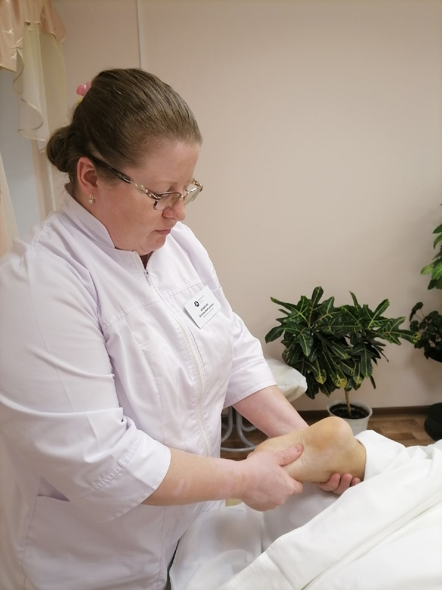
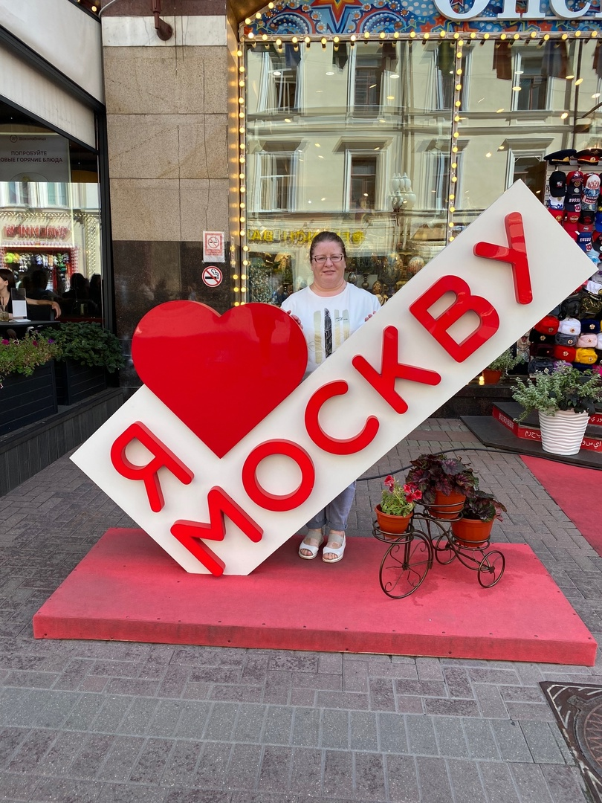
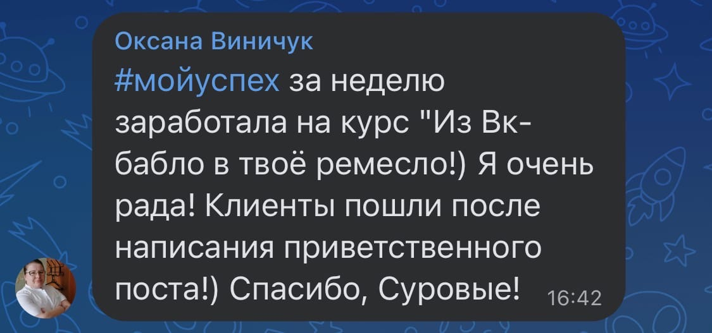

Работала в найме с небольшим доходом около 20 тысяч рублей в месяц, без частных клиентов. Обучение на курсе помогло значительно увеличить доход – теперь он составляет порядка 100 тысяч рублей ежемесячно, включая работу в найме. Стала востребованным специалистом по массажу в своем городке, с самым высоким ценником среди конкурентов.
Оксана Виничук, массажист из небольшого городка Удомля, поделилась с нами своими успехами.
Мы взяли у нее короткое интервью:
— Расскажи, что было до курса, какой средний доход был в месяц? Сколько клиентов?
— До курса Евгении Брун я работала в найме, да и сейчас работаю.
Были попытки обучения (и массажу, и продажам) была польза, да, но с курсом Евгении несравнимо.
И, несмотря на то, что до ВК-бабло была учеба - частных клиентов у меня не было.
Зарплата тогда была совсем небольшая – в 20т.р. Ипотека, коммунальные, и на руках оставались совсем гроши.
А если и появлялся кто на дому – то брала за массаж дешево, оттого и делать его совсем желание пропадало.
— Какие сложности были во время обучения на нашем курсе? На сколько сложно было учиться? За сколько прошла обучение?

— Где-то на середине курса в моей семье случилось несчастье. В ДТП 29 ноября погибла моя мама. Мне потом конечно было не до учебы.
Мы приостановили курс, пока все не уляжется. Продолжила после нового года.
Конечно, что-то было подзабыто уже (то, что проходила в начале). Отсюда все сложности. Но сами уроки очень понятные.
— Каково было работать с куратором, что было полезно, мотивировало ли это тебя? Как считаешь, без куратора получилось бы так же?
— Ну, куратор – это вообще круть. Всегда подскажет как лучше, исправит, направит. С куратором чувствуешь себя увереннее. Зная, что рядом помощник.
Конечно мотивировало.
Сомневаюсь, что без куратора получилось бы также. Она всегда подбодрит, ответит в любой момент.
— А можешь поделиться, как изменилась жизнь, когда увеличился доход? Может что-то купила себе? Съездила в путешествие? Что-то смогла сделать, чего раньше не могла себе позволить?)

— С начала 2023г я работала как папа Карло. Заработала на отпуск в Абхазию, была в Москве, купила себе айфон, оделась. Тогда доход составлял 100т.р. вместе с зарплатой, правда.
Когда работаешь в найме, в выходные дни хочется и отдохнуть тоже.
С ноября 2023 на работе подняли зарплату на 30% (56600₽), да плюс подработки на 20000-30000т.р. в месяц – мне этого достаточно.
Сейчас я стараюсь себя не напрягать особо в выходные. Пару человек, и все. Ну, в декабре троих взяла. В нашем небольшом городке у меня самый высокий ценник на массаж(1500₽ спина 1 сеанс).
— Какие сейчас действия делаешь для привлечения клиентов? Как часто пишешь посты? Запускаешь ли рекламу?
— Рекламу не запускаю совсем, даже не дошла до уроков по рекламе. После приветственного поста, это было в осенние школьные каникулы, я окупила курс за неделю.

Народ пошёл!)
И с тех пор не перестает сам идти. Уже расписан декабрь, и внесены предоплаты)
— Спасибо тебе за ответы! Была рада пообщаться)